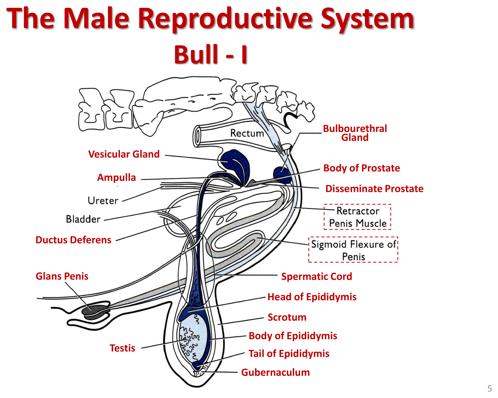
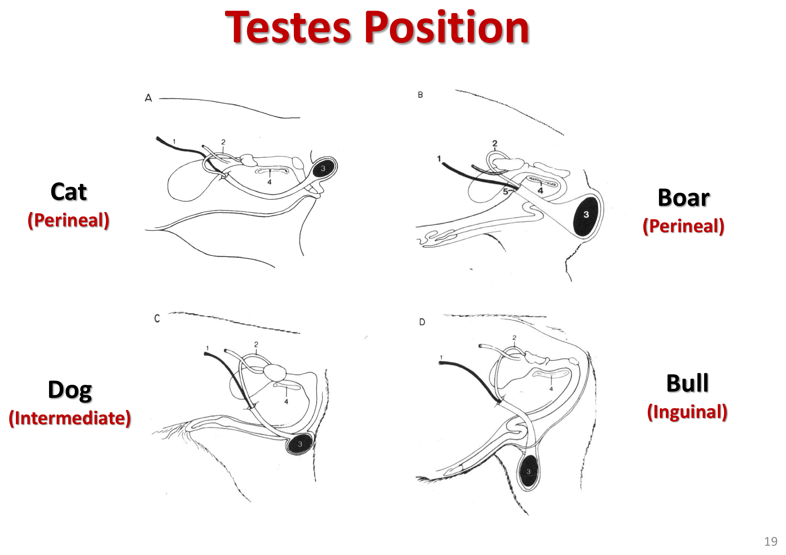
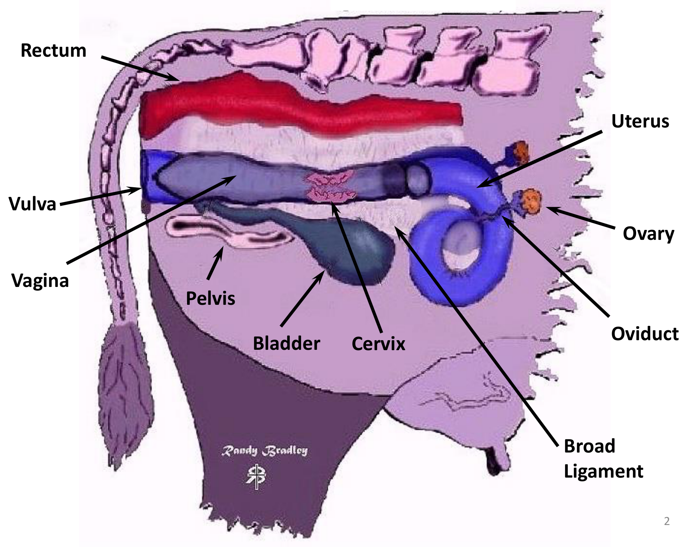
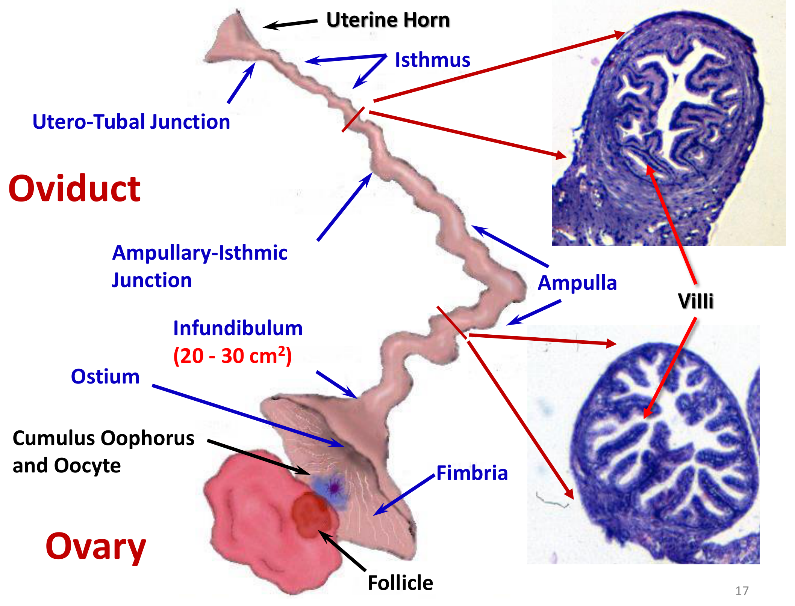
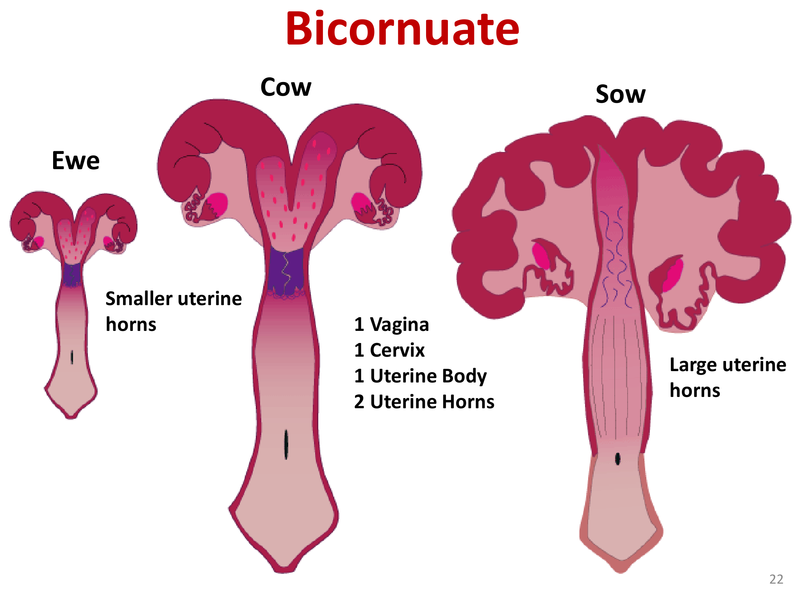

生殖系統總論 Reproductive System Overview
生殖系統分為公畜（male）與母畜（female）兩大部分，兩者的管狀構造（輸精管、輸卵管、子宮、陰道）在組織學上有共通的三層基本結構，且都具有產生配子（gametogenic）與內分泌（endocrine）雙重功能。本節先整理跨性別、跨物種都通用的基礎概念，後面公畜、母畜小節會大量引用。
常用物種術語（Animal／Male／Female）
| 動物 Animal | 公 Male | 母 Female |
|---|---|---|
| 馬 Equine/Horse | Stallion 種公馬 | Mare 母馬 |
| 牛 Bovine/Cattle | Bull 種公牛 | Cow 母牛 |
| 羊 Ovine/Sheep | Ram 種公羊 | Ewe 母羊 |
| 豬 Porcine/Swine | Boar 種公豬 | Sow 母豬 |
| 雞 Avian/Chicken | Rooster 公雞 | Hen 母雞 |
| 犬 Canine/Dog | Dog 公犬 | Bitch 母犬 |
| 貓 Feline/Cat | Tom 公貓 | Queen 母貓 |
管狀生殖道的共通組織構造
不論是公畜的輸精管（ductus deferens）或母畜的輸卵管、子宮、陰道，基本上都是由內而外的三層構造：
含黏膜下層（submucosa）與管腔（lumen），血管豐富
環走肌（circular）＋縱走肌（longitudinal）平滑肌層，負責蠕動推送配子／胚胎
最外層，延續自腹膜（peritoneum）
生殖系統的雙重功能
睪丸產生精子（sperm）；卵巢產生卵母細胞（oocyte）
睪丸分泌睪固酮；卵巢分泌動情素（estrogen）與黃體素（progesterone）
本頁架構：公畜生殖系統分「睪丸、副睪與輸精管」「副性腺、陰莖與包皮」兩節；母畜生殖系統分「卵巢與輸卵管」「子宮、子宮頸與陰道」兩節，並在子宮小節末附帶整理乳腺／乳頭跨物種比較（同一份講義內容）。各節皆以 113 學年度解剖學實習講義（Male／Female reproductive system 113）為主要整理依據，並標註犬貓／牛／馬／豬／羊等物種間的重要差異。
睪丸、副睪與輸精管 Testes, Epididymis & Ductus Deferens
公畜生殖器官共六大部分：成對的睪丸（產生精子與荷爾蒙）、成對的副睪與輸精管（運送精子至尿道）、一組副性腺（貢獻精液主要液體成分）、尿道、陰莖（交配器官）、以及陰囊與包皮等皮膚特化構造。本節先整理睪丸本體、其保護構造，以及副睪、輸精管的運送路徑。

陰囊構造（由外而內）
| 層次 | 說明 |
|---|---|
| 陰囊皮膚／肉膜 Scrotal skin／Tunica dartos | 皮膚薄、富彈性、被毛稀疏且具汗腺（豬除外）；肉膜含平滑肌，協助調節睪丸與體壁的距離 |
| 陰囊隔 Scrotal septum | 將陰囊分隔為左右兩個獨立腔室 |
| 外精索筋膜 External spermatic fascia | 延續自腹外斜肌腱膜 |
| 陰道鞘膜（壁層／臟層）Parietal／Visceral tunica vaginalis | 來自腹膜（peritoneum）及腹橫肌延伸；壁層貼陰囊、臟層包覆睪丸與副睪，兩層間為陰道腔（vaginal cavity） |
| 提睪肌 Cremaster muscle | 由腹內斜肌尾側肌纖維延伸而成，收縮可調整睪丸位置以配合溫度／天氣 |
| 白膜 Tunica albuginea | 睪丸本體的堅韌纖維囊，深入實質形成中隔（septa），將睪丸分成許多小葉 |
睪丸的組織構造
精子生成場所，管壁由生殖細胞（不同分化階段：精原細胞→初級精母細胞→次級精母細胞→精子細胞）與賽托利氏細胞（Sertoli cells，支持與營養生殖細胞）組成；曲細精管匯流成睪丸網（rete testis）後經輸出小管（efferent ducts）進入副睪頭。
位於曲細精管間的間質，負責分泌睪固酮（testosterone），屬於睪丸的內分泌功能來源。
副睪 Epididymis 五大功能
Maturation of sperm
Concentration of sperm
Secretion of semen
Transportation of sperm
Storage of sperm
副睪分頭（head，承接輸出小管）、體（body）、尾（tail，儲存成熟精子並延續為輸精管）三部分。
睪丸的保護與支持構造——精索與溫度調節
精索（spermatic cord）內含血管（睪丸動脈）、淋巴管、神經、輸精管與提睪肌，是重要的熱交換器（heat exchanger）：其中的蔓狀靜脈叢（pampiniform plexus）透過逆流熱交換（counter-current exchange）機制，將由體循環進入睪丸的動脈血溫度從約 39℃ 降至睪丸所需的約 34℃（較體溫低 4–7℃），此為精子生成所必需的低溫環境；提睪肌與肉膜則透過改變睪丸與體壁的距離做粗調（天冷時睪丸貼近體壁）。
睪丸下降與位置異常
睪丸在胚胎發育時位於腹腔內，經引帶（gubernaculum）牽引，沿腹股溝管（inguinal canal）下降進入陰囊。各物種下降時間不同：
| 物種 | 睪丸下降時間 |
|---|---|
| 反芻動物 Ruminant | 出生前 |
| 馬 Horse | 出生後一週內 |
| 豬 Pig | 出生前 |
| 犬 Dog | 出生後兩個月內（少數品種可能較晚，但罕見超過六個月） |
| 人 Human | 出生前 |
隱睪症（Cryptorchidism）：睪丸未下降至陰囊，滯留於腹股溝區或腹腔內，高溫環境會抑制精母細胞分化而導致不孕；可用睪固酮治療並於青春期前手術矯正，未矯正者日後有較高機率發生睪丸腫瘤；好發品種包含吉娃娃、迷你雪納瑞、博美、貴賓（迷你／玩具／標準）、喜樂蒂牧羊犬、西伯利亞哈士奇、約克夏㹴。另有單睪／無睪症（monorchism／anorchism，罕見）與多睪症（polyorchism，極罕見）。
腹股溝疝氣（inguinal herniation）：公豬發生率約 1/200，腸道可經未完全閉合的鞘狀突（vaginal process）滑入陰囊，造成陰囊明顯腫大，需與正常睪丸鑑別。
各物種睪丸位置與外觀差異
| 物種 | 睪丸位置 | 備註 |
|---|---|---|
| 貓 | 會陰部 Perineal | |
| 豬（Boar） | 會陰部 Perineal | 雙側大小略有差異，左側通常較重 |
| 犬 | 中間位 Intermediate | |
| 牛（Bull） | 腹股溝部 Inguinal | 右側通常較重（約300g） |
| 羊（Ram） | 腹股溝部 Inguinal | 左側睪丸略較大 |
| 馬（Stallion） | 腹股溝部 Inguinal | 左側通常較大，注意生理性的睪丸扭轉（testicular torsion）方向 |
趣味補充——恆位腹內睪丸（Testicond as normal）：大象、蹄兔（hyrax）、大食蟻獸與海洋哺乳類等動物睪丸終生位於腹腔內、不下降，其精子生成在核心體溫下即可正常進行；兔、食蟲目、蝙蝠、鹿等則是季節性下降——僅在繁殖季下降入陰囊，之後又縮回腹腔。
輸精管 Vas Deferens／Ductus Deferens
由副睪尾延續而出，經腹股溝管進入腹腔，越過膀胱背側頂部，止於尿道起始處稱為壺腹（ampulla）。管壁同樣為漿膜、平滑肌（縱−環−縱三層）、黏膜三層構造；左右各一條，通常右側較左側長；公豬的壺腹極小或缺如。

副性腺、陰莖與包皮 Accessory Glands, Penis & Prepuce
副性腺負責貢獻精液的液體成分；陰莖是交配器官，各物種在型態（纖維彈性型 vs. 肌肉海綿型）與交配機制上差異很大；本節依序整理副性腺、生殖器相關肌肉，以及牛、馬、豬、犬、貓、羊各物種的陰莖／包皮特化構造與重要臨床議題。
副性腺 Accessory Sex Glands
包含成對的儲精囊（seminal vesicle／vesicular gland）、成對的尿道球腺（bulbourethral gland／Cowper's gland），以及單一的前列腺（prostate），共同分泌精液的液體部分；結構上皆為漿膜／平滑肌／腺體的管狀或囊狀器官。
| 副性腺 | 位置／構造 | 物種差異重點 |
|---|---|---|
| 儲精囊 Seminal vesicle | 成對，頂端接近直腸，開口於膀胱頸與尿道交界處；分底、體、頸三部分 | 犬與貓完全沒有儲精囊；公豬、公羊的儲精囊特別發達 |
| 前列腺 Prostate | 單一腺體，位於膀胱頸與尿道起始處之間，兩葉以峽部（isthmus）於尿道背側相連 | 公牛分體部（body）＋瀰漫部（disseminate part）；公羊只有瀰漫部、無明顯體部；犬前列腺完整包覆尿道起始段，是犬常見疾病好發部位 |
| 尿道球腺 Bulbourethral／Cowper's gland | 成對，位於前列腺後方、尿道上，構造與前列腺相似 | 犬沒有尿道球腺；貓的尿道球腺體積小且左右緊靠；公豬、公羊的尿道球腺特別發達 |
記憶重點：犬是唯一「儲精囊＋尿道球腺都缺如」、只剩前列腺的常見家畜物種，這也是犬前列腺疾病（良性增生、前列腺炎、腫瘤）在臨床上特別重要的解剖背景之一。
公畜生殖器相關肌肉
| 肌肉 | 起訖／作用 |
|---|---|
| 提睪肌 Cremaster muscle | 腹內斜肌尾側肌纖維延伸，調整睪丸位置 |
| 尿道肌 Urethralis | 膀胱平滑肌延續，協助尿液／精液通過骨盆腔尿道 |
| 球海綿體肌 Bulbospongiosus | 尿道肌的延續，馬可延伸至陰莖全長，其他動物僅延伸一小段距離 |
| 坐骨海綿體肌 Ischiocavernosus | 起自坐骨弓兩側，收縮時阻斷陰莖靜脈回流，造成陰莖勃起 |
| 陰莖縮回肌 Retractor penis muscle | 起自肛門懸吊韌帶，於陰莖腹側會合，負責將鬆弛的陰莖拉回包皮內 |
陰莖類型：纖維彈性型 vs. 肌肉海綿型
牛、羊：陰莖海綿體結締組織豐富、血管腔小，平時已呈半硬狀態，勃起時體積變化不大；具乙狀彎曲（sigmoid flexure）使陰莖收縮於包皮內，交配時經退縮肌放鬆、伸直陰莖。
馬、犬：海綿體內含大量血管腔隙，勃起時因血液大量充盈而顯著增大、伸長；無乙狀彎曲。
各物種陰莖／包皮重要差異
| 物種 | 重要特徵 |
|---|---|
| 牛 Bull | 纖維彈性型，乙狀彎曲；龜頭冠（glans）小，尿道突起（urethral process）不明顯 |
| 羊 Ram | 纖維彈性型，乙狀彎曲；具明顯尿道突起（urethral process），射精時甩動呈圓周運動，將精液噴灑至子宮頸周圍；偶見尿道結石卡在尿道突起處 |
| 馬 Stallion | 肌肉海綿型，血管腔隙極豐富；包皮為雙層皺褶（double fold of prepuce） |
| 豬 Boar | 纖維彈性型，乙狀彎曲；龜頭呈螺旋狀（corkscrew），勃起時可契合母豬子宮頸的螺旋狀皺褶；包皮具雙葉憩室（bilobed preputial diverticulum），內容物含尿液、精液與大量細菌，可能發炎並形成結石，必要時需手術移除 |
| 犬 Dog | 肌肉海綿型；含陰莖骨（os penis）與球狀部（bulbus glandis）——交配時球狀部充血腫大卡於母犬陰道內形成「交配栓結（copulatory tie）」，可持續 5–45 分鐘 |
| 貓 Tom | 含陰莖骨；龜頭表面覆有倒鉤狀陰莖棘（penile spines），交配時可刺激母貓誘發排卵（貓為誘導排卵動物） |
犬交配的三階段：第一階段（插入，1–2 分鐘）→「轉身（the turn）」（2–5 秒，公犬翻轉呈背對背姿勢）→第二階段（交配栓結，5–45 分鐘，此時球狀部因坐骨海綿體肌收縮阻斷靜脈回流而腫脹卡於陰道內，強行拉開可能造成生殖道損傷）。
公豬包皮憩室感染：憩室內容物含尿液、精液與細菌，收縮的前包皮肌可將內容物排至陰莖表面協助潤滑，但也容易滋生細菌造成局部感染甚至結石，臨床上偶需手術摘除憩室處理。
陰莖骨 Os Penis（犬／貓）
陰莖骨位於陰莖海綿體背側，遠端呈纖維軟骨（fibrocartilage）；橫切面上尿道位於陰莖骨腹側凹槽（urethral groove）內，周圍包覆尿道海綿體（corpus spongiosum）；陰莖骨的存在使犬貓陰莖具有一定硬度，也是X光下可辨識的正常解剖構造，不可誤判為病灶。
卵巢與輸卵管 Ovary & Oviduct
母畜生殖道由卵巢、輸卵管、子宮、子宮頸、陰道與外陰部組成，全程懸吊於廣韌帶（broad ligament／mesometrium）上。本節整理卵巢的構造與內分泌功能，以及輸卵管（受精發生的場所）的分區與功能，並附帶整理相關懸吊韌帶。

卵巢 Ovary——構造
大多數家畜有一對卵巢，終生位於腹腔內。基本構造由外而內：生殖上皮（germinal epithelium）→白膜（tunica albuginea）→皮質（cortex，含各級濾泡）→髓質（medulla，血管淋巴神經集中處），另有基質（stroma）與少量平滑肌。
馬卵巢的特殊構造：馬（及驢）的卵巢皮質與髓質位置與其他家畜（含人類）相反——皮質在內、髓質在外，且僅在單一凹陷處（排卵窩 ovulation fossa）具生殖上皮並允許排卵，其餘表面由漿膜覆蓋，因此馬的排卵一定發生在排卵窩，是馬生殖生理的重要特徵。
卵巢的內分泌構造與週期性變化
卵巢的內分泌功能由卵泡膜內層（theca interna）、顆粒細胞（granulosa cells），以及統稱為間質腺（interstitial gland）的其他細胞群共同負責，排卵後濾泡依序經歷：
Corpus hemorrhagicum
Corpus luteum
Corpus albicans
黃體分泌黃體素（progesterone）維持懷孕；濾泡分泌動情素（estrogen）。卵巢作為主要性器官（primary sex organ），兼具荷爾蒙（動情素、黃體素）與生殖細胞（卵母細胞）兩項功能。
各物種卵巢活性的側別差異
| 物種 | 較活躍的一側 |
|---|---|
| 禽類 Avian | 左側卵巢完全發育，右側退化 |
| 牛、羊 Cow／Ewe | 右側卵巢排卵次數較多 |
| 豬、馬 Sow／Mare | 左側卵巢較具功能性 |
輸卵管 Oviduct（Uterine tube／Salpinx）——分區
| 分區 | 說明 |
|---|---|
| 漏斗部 Infundibulum | 喇叭狀開口（約20–30 cm²），邊緣有繖部（fimbriae），開口稱輸卵管腹腔口（ostium），負責接住排出的卵母細胞（連同卵丘細胞 cumulus oophorus） |
| 壺腹部 Ampulla | 管腔較寬、黏膜皺褶（villi）發達，是受精發生的主要場所 |
| 壺峽接合部 Ampullary-isthmic junction | 壺腹與峽部的交界，精子在此暫存等待受精 |
| 峽部 Isthmus | 管腔較窄，黏膜皺褶較少 |
| 輸卵管子宮接合部 Utero-tubal junction | 輸卵管與子宮角的交界處 |

輸卵管功能
精子與卵母細胞的運送通道
壺腹部是受精發生的部位
支持早期合子／胚胎發育，並運送至子宮
卵巢與生殖道的懸吊韌帶
以犬（bitch）為例，卵巢區域由多層韌帶懸吊固定：卵巢懸韌帶（suspensory ligament of ovary）、卵巢系膜（mesovarium）、輸卵管系膜（mesosalpinx）、卵巢固有韌帶（proper ligament of ovary）、子宮圓韌帶（round ligament of uterus），以及包覆整個子宮與卵巢的廣韌帶／子宮系膜（broad ligament／mesometrium）。
卵巢囊（ovarian bursa）：犬貓的卵巢外側被腹膜皺褶完全或近乎完全包覆形成卵巢囊，僅留一小開口（ostium of ovarian bursa）與輸卵管相通；這層構造在卵巢子宮切除術（ovariohysterectomy）中會影響卵巢蒂的顯露與操作，是外科臨床上需注意的解剖細節。
子宮、子宮頸與陰道 Uterus, Cervix & Vagina
子宮的型態在不同物種間差異極大，反映出各物種的產仔數與胎盤型態；子宮頸則是決定人工授精、直腸觸診配種與分娩難易度的關鍵構造。本節依序整理子宮型態分類、子宮／子宮頸／陰道功能，各物種重要差異，以及乳腺跨物種比較。
子宮型態三大分類
| 類型 | 構造 | 物種 |
|---|---|---|
| 單子宮 Simplex | 1陰道、1子宮頸、1子宮體，無子宮角 | 靈長類（人） |
| 雙角子宮 Bicornuate | 1陰道、1子宮頸、1子宮體＋2子宮角 | 羊、牛、豬、馬、犬、貓 |
| 重複子宮 Duplex | 2子宮角、2子宮頸（部分物種甚至2陰道） | 鼠、兔、負鼠 |
雙角子宮是家畜最常見的型態，但同屬雙角子宮，各物種子宮體與子宮角的相對比例差異很大：羊子宮角較小；牛子宮角中等大小；豬子宮角非常長、盤繞如腸道（對應一胎多仔）；馬子宮體特別大、子宮角相對較小；犬、貓子宮體小、子宮角細長。
子宮的功能
協助精子往輸卵管方向運送；分娩時將胎兒與胎盤排出體外
子宮環境部分促成精子獲能（鈣離子內流以活化精子）
提供著床、胎盤形成與胎兒生長所需的環境
若未懷孕，子宮分泌 PGF2α 引發黃體（corpus luteum）萎縮，週期得以繼續
子宮頸 Cervix——各物種差異
子宮頸由厚實的結締組織構成，是子宮與陰道間的關卡，在發情期／配種期會分泌黏液潤滑。
| 物種 | 子宮頸構造特徵 |
|---|---|
| 牛 Cow | 具4–5圈環狀皺褶（annular rings），人工授精操作時需小心通過每圈皺褶 |
| 豬 Sow | 無陰道穹窿（no fornix vagina），黏膜呈交錯狀墊狀突起（interdigitating pads），與公豬螺旋狀龜頭相契合 |
| 馬 Mare | 黏膜呈縱向皺褶（longitudinal folds），具陰道穹窿（fornix vagina）；子宮頸突入陰道，觸診／內視鏡下形似「小火山（small volcano）」 |
| 犬／貓 | 構造相對簡單，無特殊皺褶障礙 |
子宮頸作為精子屏障（species-dependent）：牛、羊、犬、貓的子宮頸對精子通過具屏障作用（人工授精須穿過子宮頸或用特殊導管）；豬與馬的子宮頸則無此屏障，公豬／種公馬射精時精液可直接大量進入子宮腔。
子宮頸的功能
- 運送精子（transport of sperm）
- 屏障精子逆向通過（barrier to sperm transport，物種依賴）
- 精子儲存庫（reservoir for sperm）
- 懷孕期間阻擋細菌上行感染（blocking bacterial invasion）
- 產道（birth canal）的一部分
陰道 Vagina
分為前陰道（anterior vagina，黏膜為柱狀上皮 columnar epithelium）與後陰道／前庭（posterior vagina／vestibule，黏膜為複層鱗狀上皮 stratified squamous epithelium）兩段，兩者間以陰道前庭括約肌（vulva-vaginal sphincter）為界，尿道開口（urethral opening）位於此交界處附近。前陰道頂端與子宮頸交界處形成環狀凹陷稱陰道穹窿（fornix）。
交配器官、腺體分泌潤滑液、產道、腺體分泌費洛蒙（pheromones）、精液沉積處（依物種而異，牛羊精液沉積於陰道前段／子宮頸口，豬馬精液直接射入子宮）
由陰唇（labia）、陰唇裂（cleft）、背側聯合（dorsal commissure）、腹側聯合（ventral commissure）組成；發情期陰唇腫脹並可能有血樣分泌物（proestrus 出血）

乳腺／乳頭跨物種比較（同一份講義附帶內容）
| 物種 | 乳頭位置 | 每一乳頭的乳管數 |
|---|---|---|
| 牛、駱駝 | 鼠蹊部 Inguinal | 每乳頭2條乳管（駱駝）／每乳頭1條乳管、1乳池（牛） |
| 羊、山羊、馬 | 鼠蹊部 Inguinal | 每乳頭1條乳管／1乳池（cistern）（牛、羊、山羊皆同此型） |
| 豬 Sow | 鼠蹊部（多對，沿腹側排列） | 每乳頭2–3條乳管（馬、豬同屬此型） |
| 犬、貓 | 胸腹側 4–5對 | 每乳頭5–6條乳管 |
| 靈長類、大象 | 胸側 Thoracic | 每乳頭8–10條乳管 |
乳頭的乳管數與泌乳生理相關：牛、羊、山羊、馬每乳頭僅1條乳管配1個乳池，擠乳時乳汁先儲存在乳池內；犬貓、靈長類則每乳頭有多條獨立乳管直接開口，儲乳能力較低、需頻繁哺乳。
學習重點整理
考試／臨床實務角度的整理，複習前可先快速掃過本節，找出自己不熟的部分再回對應章節細讀。
練習題 Practice Quiz
涵蓋公畜、母畜生殖系統各章節重點，先自己作答再點「顯示答案」核對，答錯的觀念請回對應章節重讀一次。
犬貓皆無儲精囊；犬另外也缺乏尿道球腺，是唯一「儲精囊＋尿道球腺都缺如」、只剩前列腺分泌精液液體成分的常見家畜物種，也是犬前列腺疾病特別重要的解剖背景。
蔓狀靜脈叢的逆流熱交換是將動脈血溫度「降低」，使睪丸維持在比體溫低約4–7℃的環境，這是精子生成所必需的低溫條件，而非升高至核心體溫。
貓與公豬的睪丸位於會陰部（perineal）；犬為中間位（intermediate）；公牛、種公馬、公羊則為腹股溝位（inguinal）。
睪丸未能下降至陰囊，滯留於腹股溝區或腹腔內，該處溫度接近體溫（遠高於陰囊內的低溫環境），高溫會抑制精母細胞的分化，導致精子生成障礙而不孕；未矯正者日後罹患睪丸腫瘤機率也較高。好發品種包括吉娃娃、迷你雪納瑞、博美、貴賓、喜樂蒂牧羊犬、西伯利亞哈士奇、約克夏㹴等玩具／小型犬。
公豬陰莖屬於纖維彈性型、具乙狀彎曲，龜頭呈螺旋狀以契合母豬螺旋狀子宮頸；包皮具雙葉憩室（易積存尿液精液細菌而發炎）；陰莖骨見於犬貓，豬並無此構造。
坐骨海綿體肌收縮阻斷陰莖靜脈回流，使球狀部充血腫大並卡於陰道內，形成可持續5–45分鐘的交配栓結；強行拉開可能造成生殖道損傷。
馬（及驢）卵巢的皮質髓質位置與其他家畜相反，僅在排卵窩具生殖上皮並允許排卵，其餘表面由漿膜覆蓋，是馬生殖生理的重要特徵；此外馬的左側卵巢通常較具功能性。
由卵巢端至子宮端依序為：漏斗部（infundibulum，含繖部fimbriae接住卵母細胞）→壺腹部（ampulla）→壺峽接合部（ampullary-isthmic junction）→峽部（isthmus）→輸卵管子宮接合部（utero-tubal junction）。受精主要發生在「壺腹部」，此處黏膜皺褶豐富，也是精卵相遇的場所。
牛、羊右側卵巢排卵較多；豬、馬左側卵巢較具功能性；禽類則是左側卵巢完全發育、右側退化。
牛羊豬馬犬貓等家畜皆屬雙角子宮（1陰道1子宮頸1子宮體＋2子宮角）；人類屬單子宮（simplex，無子宮角）；小鼠、兔、負鼠屬重複子宮（duplex，2子宮角2子宮頸）。
牛、羊、犬、貓的子宮頸對精子逆向通過具有屏障功能（如牛子宮頸有4–5圈環狀皺褶阻擋），人工授精須以特殊技術或導管穿越子宮頸。豬（無陰道穹窿、子宮頸呈交錯墊狀契合公豬螺旋龜頭）與馬（子宮頸突入陰道呈「小火山」狀）的子宮頸則無此屏障作用，交配或授精時精液可直接大量進入子宮腔。
貓為誘導排卵動物（induced ovulator），交配時龜頭表面的倒鉤狀陰莖棘刺激陰道，可誘發母貓的排卵反射。
犬貓每乳頭約5–6條獨立乳管，牛羊馬則是每乳頭1條乳管配1個乳池（利於擠乳前的乳汁儲存），豬與馬同屬2–3條乳管，靈長類與大象則是8–10條乳管，各物種乳腺構造反映不同的哺乳／泌乳生理策略。
若該次發情週期未受孕，子宮內膜會分泌前列腺素 PGF2α，經由子宮靜脈與卵巢動脈間的逆流交換機制作用於同側卵巢，引發黃體（corpus luteum）萎縮退化，使黃體素濃度下降，讓動物得以進入下一次發情週期；這也是臨床上使用 PGF2α 類似物進行同期發情（estrus synchronization）的生理基礎。